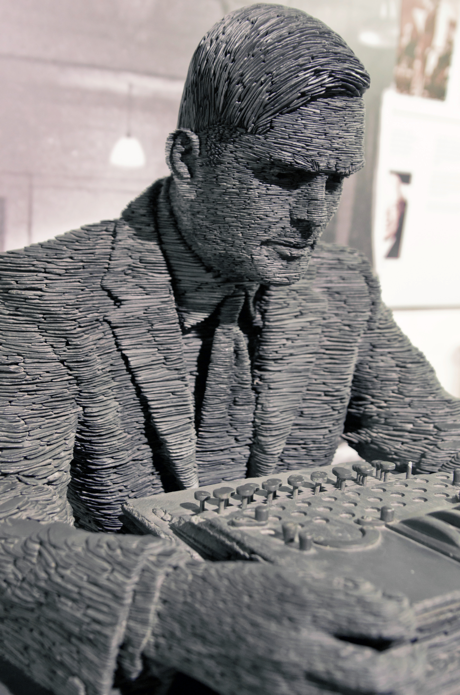

Alan Turing
The enigma who shortened world war two by two years, founded
computer science and changed our lives forever.
Timeline
- 1912 - Alan Turing was born in London, England
- 1934 - Turing graduates from Kings college with first-class
honours in mathematics
- 1936 - Turing published a paper which mentioned a machine
that code take over the role of every machine
- 1938 - Turing obtained a PhD from Princeton
- 1939 - Turing started work at Bletchly Park where
worked on several things related to world war two,
partially decrypting the german codes.
- 1945 - Turing was awarded the OBE by King George VI
- 1952 - Turing was convicted for homosexual acts with
Arnold Murray and given hormonal treatment to 'cure' him
- 1954 - Turing passed away due to cyanide poisoning
- 1996 - The annual Turing award started being giving out
for technical or theoretical contributions to the computing
community. The technical equivalent of the nobel prize
for computers.
-
1999 - Time magazine named Turing as one of the 100 Most
Important People of the 20th century
-
2013 - Queen Elizabeth II signed a pardon for Turing's
conviction for gross indecency.
Learn More (Wikipedia)
Read his biography (Amazon)
Image credit: By Antoine Taveneaux - Own work, CC BY-SA 3.0